User Interface
PyDFT is an educational pure-Python module to perform simple density functional theory (DFT) calculations using a Gaussian basis set. Uniquely, PyDFT exposes many routines that are normally hidden from the user, which are potentially interesting for the user to understand how a DFT calculations is performed. We will provide a demonstration here.
Note
Every code snippet listed below can be run stand-alone. This does imply that every code snippet re-performed the initial self-consistent field calculation. If that is undesirable, the reader is invited to copy the relevant parts of the code (highlighted) and place these in a single file.
Building molecules
Molecules can be built either directly using the Molecule class or via
a MoleculeBuilder convenience routine.
Important
The Molecule and MoleculeBuilder classes are not implemented
in PyDFT but are obtained from the PyQInt module.
Molecule class
To manually build a molecule, one first need to construct a Molecule
object after which one or more atoms can be assigned to the molecule. If no
unit is specified, it is assumed that all coordinates are given in
atomic units (i.e. Bohr units).
1from pyqint import Molecule
2
3mol = Molecule('co')
4mol.add_atom('C', 0.0, 0.0, 0.0, unit='angstrom')
5mol.add_atom('O', 0.0, 0.0, 1.2, unit='angstrom')
MoleculeBuilder class
Alternatively, a Molecule can be constructed from the MoleculeBuilder
class which uses a name. For more information about the MoleculeBuilder
class, please consult the
PyQInt documentation on the MoleculeBuilder class.
1from pyqint import Molecule
2
3co = MoleculeBuilder().from_name("CO")
Calculating electronic energy
To start, we perform a high-level calculation of the electronic structure
of the carbon-monoxide molecule using the PBE exchange-correlation functional.
To perform this calculation, we first have to construct a
pydft.DFT object which requires a molecule as its input. Next, we use
the pydft.DFT.scf() routine to start the self-consistent field calculation.
1import numpy as np
2from pydft import MoleculeBuilder, DFT
3
4# perform DFT calculation on the CO molecule
5co = MoleculeBuilder().from_name("CO")
6dft = DFT(co, basis='sto3g')
7en = dft.scf(1e-6, verbose=False)
8
9# print total energy
10print("Total electronic energy: %12.6f Ht" % en)
Performing this calculation shows that the total electronic energy for this system corresponds to:
Total electronic energy: -111.147096 Ht
Showing the electronic steps
1import numpy as np
2from pydft import MoleculeBuilder, DFT
3
4# perform DFT calculation on the CO molecule
5co = MoleculeBuilder().from_name("CO")
6dft = DFT(co, basis='sto3g')
7en = dft.scf(1e-5, verbose=True)
Executing the script above yields the following output:
001 | E = -179.237380 | dE = 0.0000e+00 | 0.0010 s
002 | E = -106.678953 | dE = 0.0000e+00 | 0.0810 s
003 | E = -117.660767 | dE = 7.2558e+01 | 0.0670 s
004 | E = -107.204261 | dE = 1.0982e+01 | 0.0660 s
005 | E = -117.396119 | dE = 1.0457e+01 | 0.0610 s
006 | E = -117.080704 | dE = 1.0192e+01 | 0.0690 s
007 | E = -108.040074 | dE = 3.1541e-01 | 0.0580 s
008 | E = -107.453445 | dE = 9.0406e+00 | 0.0620 s
009 | E = -110.504979 | dE = 5.8663e-01 | 0.0710 s
010 | E = -110.484364 | dE = 3.0515e+00 | 0.0680 s
011 | E = -109.605523 | dE = 2.0615e-02 | 0.0680 s
012 | E = -111.037173 | dE = 8.7884e-01 | 0.0630 s
013 | E = -111.136251 | dE = 1.4317e+00 | 0.0710 s
014 | E = -111.147174 | dE = 9.9078e-02 | 0.0730 s
015 | E = -111.146826 | dE = 1.0923e-02 | 0.0660 s
016 | E = -111.146838 | dE = 3.4816e-04 | 0.0720 s
017 | E = -111.146838 | dE = 1.2150e-05 | 0.0660 s
018 | E = -111.146838 | dE = 8.0277e-08 | 0.0660 s
Stopping SCF cycle, convergence reached.
Different exchange-correlation functionals
To use a different exchange-correlation functional, we can use the
1import numpy as np
2from pydft import MoleculeBuilder, DFT
3
4# perform DFT calculation on the CO molecule
5co = MoleculeBuilder().from_name("CO")
6
7# use SVWM XC functional
8dft = DFT(co, basis='sto3g', functional='svwn5')
9print('SVWN: ', dft.scf(1e-5), 'Ht')
10
11# use PBE XC functional
12dft = DFT(co, basis='sto3g', functional='pbe')
13print('PBE: ', dft.scf(1e-5), 'Ht')
which yields the following total electronic energies for the SVWN5 and
PBE exchange-correlation functions:
SVWN: -111.14709591483225 Ht
PBE: -111.65660426438342 Ht
Electron density and its gradient
The pydft.DFT class exposes its internal matrices and a number of
useful functions which we can readily use to interpret its operation. Let us
start by generating a plot of the electron density using the method
pydft.DFT.get_density_at_points().
1import numpy as np
2from pydft import MoleculeBuilder, DFT
3import matplotlib.pyplot as plt
4from mpl_toolkits.axes_grid1 import make_axes_locatable
5
6# perform DFT calculation on the CO molecule
7co = MoleculeBuilder().from_name("CO")
8dft = DFT(co, basis='sto3g')
9en = dft.scf(1e-6, verbose=False)
10
11# generate grid of points and calculate the electron density for these points
12sz = 4 # size of the domain
13npts = 100 # number of sampling points per cartesian direction
14
15# produce meshgrid for the xz-plane
16x = np.linspace(-sz/2,sz/2,npts)
17zz, xx = np.meshgrid(x, x, indexing='ij')
18gridpoints = np.zeros((zz.shape[0], xx.shape[1], 3))
19gridpoints[:,:,0] = xx
20gridpoints[:,:,2] = zz
21gridpoints[:,:,1] = np.zeros_like(xx) # set y-values to 0
22gridpoints = gridpoints.reshape((-1,3))
23
24# calculate (logarithmic) scalar field and convert if back to an 2D array
25density = dft.get_density_at_points(gridpoints)
26density = np.log10(density.reshape((npts, npts)))
27
28# build contour plot
29fig, ax = plt.subplots(1,1, dpi=144, figsize=(4,4))
30im = ax.contourf(x, x, density, levels=np.linspace(-3,3,13, endpoint=True))
31ax.contour(x, x, density, colors='black', levels=np.linspace(-3,3,13, endpoint=True))
32ax.set_aspect('equal', 'box')
33ax.set_xlabel('x-coordinate [a.u.]')
34ax.set_ylabel('z-coordinate [a.u.]')
35divider = make_axes_locatable(ax)
36cax = divider.append_axes('right', size='5%', pad=0.05)
37fig.colorbar(im, cax=cax, orientation='vertical')
38ax.set_title('Electron density')
Running the above script yields the electron density.
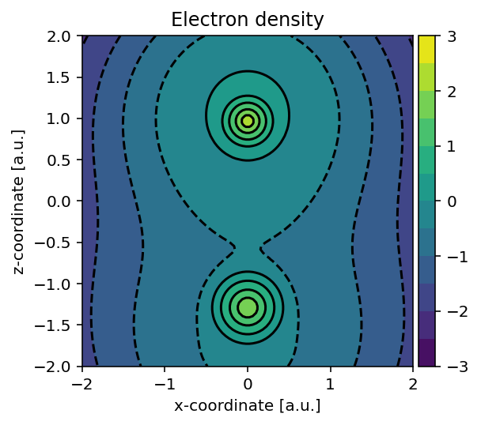
Using largely the same code, we can also readily build the electron density
gradient magnitude using pydft.DFT.get_gradient_at_points().
1import numpy as np
2from pydft import MoleculeBuilder, DFT
3import matplotlib.pyplot as plt
4from mpl_toolkits.axes_grid1 import make_axes_locatable
5
6# perform DFT calculation on the CO molecule
7co = MoleculeBuilder().from_name("CO")
8dft = DFT(co, basis='sto3g')
9en = dft.scf(1e-6, verbose=False)
10
11# generate grid of points and calculate the electron density for these points
12sz = 4 # size of the domain
13npts = 100 # number of sampling points per cartesian direction
14
15# produce meshgrid for the xz-plane
16x = np.linspace(-sz/2,sz/2,npts)
17zz, xx = np.meshgrid(x, x, indexing='ij')
18gridpoints = np.zeros((zz.shape[0], xx.shape[1], 3))
19gridpoints[:,:,0] = xx
20gridpoints[:,:,2] = zz
21gridpoints[:,:,1] = np.zeros_like(xx) # set y-values to 0
22gridpoints = gridpoints.reshape((-1,3))
23
24# calculate (logarithmic) scalar field and convert if back to an 2D array
25gradient = np.linalg.norm(dft.get_gradient_at_points(gridpoints), axis=1)
26gradient = np.log10(gradient.reshape((npts, npts)))
27
28# build contour plot
29fig, ax = plt.subplots(1,1, dpi=144, figsize=(4,4))
30im = ax.contourf(x, x, gradient, levels=np.linspace(-2,4,7, endpoint=True))
31ax.contour(x, x, gradient, colors='black', levels=np.linspace(-2,4,7, endpoint=True))
32ax.set_aspect('equal', 'box')
33ax.set_xlabel('x-coordinate [a.u.]')
34ax.set_ylabel('z-coordinate [a.u.]')
35divider = make_axes_locatable(ax)
36cax = divider.append_axes('right', size='5%', pad=0.05)
37fig.colorbar(im, cax=cax, orientation='vertical')
38ax.set_title('Electron density gradient magnitude')
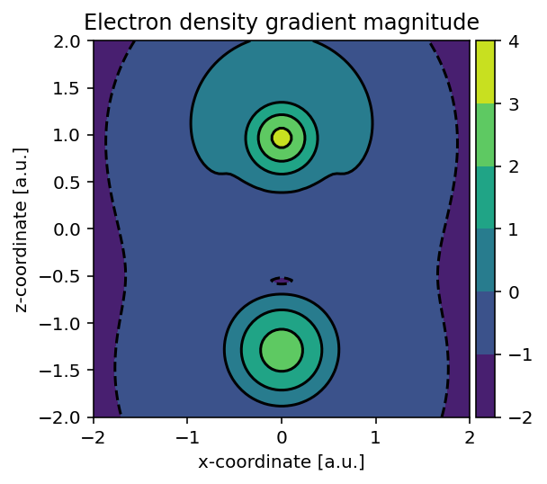
Adjusting grid and discretization schemes
By default, PyDFT uses 32 radial grid points and 110 angular grid points per atom. To calculate the Hartree potential, the electron density is projected onto spherical harmonics with a maximum angular momentum of \(l_{\text{max}} = 8\). The finite-difference discretization scheme used to solve the Poisson equation uses 7 adjacent points. All these settings can be adjusted to potentially reduce computational time or to increase upon the accuracy. In the following subsections, this is explored in more detail. In the graph below, a visual summary of the scaling of the parameters in terms of computing time is provided.
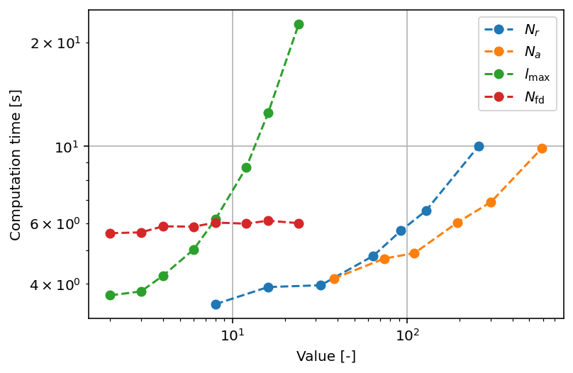
Number of radial shells
In the listing below, the scaling with respect to the number of radial shells is shown. It can be readily seen that there are no more significant changes in the total electronic energy after \(N_{r} = 64\). On the basis of these results, it can be found that the computation time scales with \(t \propto N_{r}^{0.3725}\).
\(N_{r}\) |
Energy [Ht] |
Computation Time (s) |
|---|---|---|
8 |
-114.0908 |
3.4304 |
16 |
-111.0566 |
3.6955 |
32 |
-111.1468 |
4.1970 |
64 |
-111.1495 |
4.9463 |
92 |
-111.1495 |
5.5899 |
128 |
-111.1495 |
6.5389 |
256 |
-111.1495 |
10.0511 |
Number of angular grid points
PyDFT uses by default 110 angular points per spherical shell. From the listing below, it can be seen that this yields decent accuracy in terms of energy, though the accuracy can be improved a bit further by using 194 or more angular points. On the basis of these results, it can be found that the computation time scales with \(t\propto N_{r}^{0.3344}\).
\(N_{a}\) |
Energy |
Computation Time (s) |
|---|---|---|
38 |
-111.1226 |
4.1232 |
74 |
-111.1698 |
4.8680 |
110 |
-111.1495 |
5.4705 |
194 |
-111.1503 |
6.3094 |
302 |
-111.1503 |
7.0128 |
590 |
-111.1503 |
10.1610 |
Maximum angular momentum
For the calculation of the Hartree potential, the electron density is projected
per radial shell onto spherical harmonics. The highest angular momentum used for
the projection is determined by the lmax parameter, which by default is
set to \(l_{\text{max}} =8\). Increasing this value further shows some
irregularities in terms of the energy, which are assigned to increased numerical
noise in the linear expansion coefficients used in the expansion scheme. The
total number of spherical harmonics used scales with \(N_{\text{sh}}
\propto l_{\text{max}}^{2}\), hence we see somewhat steeper scaling in terms of
computational time for this parameter. On the basis of these results, it can be
found that the computation time scales with \(t\propto
l_{\text{max}}^{1.064}\).
It is relevant to mention that the original paper of Becke mentions that the ideal value for \(l_{\text{max}} \approx l_{\text{quad}}/2\) which yields \(l_{\text{max}}\) values of 5, 8, 11 and 14 for 50, 110, 194 and 302 angular points.
\(l_{\text{max}}\) |
Energy |
Computation Time (s) |
|---|---|---|
2 |
-111.0728 |
3.7725 |
3 |
-111.1175 |
4.0743 |
4 |
-111.1412 |
4.4981 |
6 |
-111.1511 |
4.9934 |
8 |
-111.1503 |
6.0379 |
12 |
-111.1489 |
8.5445 |
16 |
-111.1489 |
12.2454 |
24 |
-111.0209 |
22.8109 |
Number discretization points
When calculating the Hartree potential, a second-order differential equation is solved for all spherical shells and for each spherical harmonic. This second-order differential equation is solved using a finite-difference approximation. For this finite-difference approximation, the number of points used to establish the first- and second-order derivatives can be set. In the following analysis, we examine the total electronic energy and computation time as functions of the number of discretization points. It is evident that beyond 7 discretization points, the total electronic energy remains unchanged. This is because the coefficients associated with points farther from the point of interest—where the derivative is calculated—become increasingly smaller. Consequently, the contribution of distant points diminishes rapidly, rendering expansions to a higher number of discretization points inefficient. Additionally, we observe minimal variation in computation time, which can be attributed to the exceptional efficiency of solving linear matrix equations. As a result, this aspect is not a significant computational bottleneck in the code.
\(N_{\text{fd}}\) |
Energy |
Computation Time (s) |
|---|---|---|
3 |
-111.1028 |
5.8947 |
5 |
-111.1501 |
5.7674 |
7 |
-111.1503 |
6.3035 |
9 |
-111.1503 |
5.9776 |
11 |
-111.1503 |
5.8185 |
13 |
-111.1503 |
5.7800 |
15 |
-111.1503 |
5.8533 |
17 |
-111.1503 |
5.8799 |
Reproducing analysis
To reproduce the analysis, one can use the script as found below.
1import numpy as np
2from pydft import MoleculeBuilder, DFT
3import matplotlib.pyplot as plt
4import time
5
6def main():
7 # perform DFT calculation on the CO molecule
8 co = MoleculeBuilder().from_name("CO")
9
10 plt.figure(dpi=144)
11
12 # explore scaling with number of radial shells
13 t = []
14 print('Spherical shells')
15 nvals = [8,16,32,64,92,128,256]
16 for n in nvals:
17 st = time.time()
18 dft = DFT(co, basis='sto3g', nshells=n)
19 en = dft.scf(1e-6, verbose=False)
20 dt = time.time() - st
21 t.append(dt)
22 print("%3i %12.4f %5.4f" % (n, en, dt))
23 print()
24
25 plt.loglog(nvals, t, 'o--', label=r'$N_{r}$')
26
27 # explore scaling with number of angular points
28 t = []
29 print('Angular points')
30 avals = [38,74,110,194,302,590]
31 for a in avals:
32 st = time.time()
33 dft = DFT(co, basis='sto3g', nshells=64, nangpts=a)
34 en = dft.scf(1e-6, verbose=False)
35 dt = time.time() - st
36 t.append(dt)
37 print("%3i %12.4f %5.4f" % (a, en, dt))
38 print()
39
40 plt.loglog(avals, t, 'o--', label=r'$N_{a}$')
41
42 # explore scaling with lmax value
43 t = []
44 print('Lmax value')
45 lvals = [2,3,4,6,8,12,16,24]
46 for lmax in lvals:
47 st = time.time()
48 dft = DFT(co, basis='sto3g', nshells=64, nangpts=590, lmax=lmax)
49 en = dft.scf(1e-6, verbose=False)
50 dt = time.time() - st
51 t.append(dt)
52 print("%3i %12.4f %5.4f" % (lmax, en, dt))
53 print()
54
55 plt.loglog(lvals, t, 'o--', label=r'$l_{\text{max}}$')
56
57 # explore scaling with number of discretization points used in the
58 # finite difference scheme to construct the Hartree potential
59 t = []
60 print('Number of finite difference coefficients')
61 fdvals = [3,5,7,9,11,13,15,17]
62 for fd in fdvals:
63 st = time.time()
64 dft = DFT(co, basis='sto3g', nshells=64, nangpts=194, fdpts=fd)
65 en = dft.scf(1e-6, verbose=False)
66 dt = time.time() - st
67 t.append(dt)
68 print("%3i %12.4f %5.4f" % (fd, en, dt))
69 print()
70
71 plt.loglog(lvals, t, 'o--', label=r'$N_{\text{fd}}$')
72 plt.grid()
73 plt.xlabel('Value [-]')
74 plt.ylabel('Computation time [s]')
75 plt.legend()
76
77if __name__ == '__main__':
78 main()
Self-consistent field matrices
To obtain any of the matrices used in the self-consistent field procedure,
we can invoke the pydft.DFT.get_data() method. For example, to visualize
the overlap matrix \(\mathbf{S}\) and the Fock matrix
\(\mathbf{F}\), we can use the script as found below.
1import numpy as np
2from pydft import MoleculeBuilder, DFT
3import matplotlib.pyplot as plt
4
5def main():
6 # perform DFT calculation on the CO molecule
7 co = MoleculeBuilder().from_name("CO")
8 dft = DFT(co, basis='sto3g')
9 en = dft.scf(1e-6, verbose=False)
10
11 # build list of basis functions
12 labels = []
13 for a in co.get_atoms():
14 for o in ['1s', '2s', '2px', '2py', '2pz']:
15 labels.append('%s - %s' % (a[0],o))
16
17 fig, ax = plt.subplots(1, 2, dpi=144, figsize=(8,4))
18 plot_matrix(ax[0], dft.get_data()['S'], xlabels=labels, ylabels=labels, title='Overlap matrix')
19 plot_matrix(ax[1], dft.get_data()['F'], xlabels=labels, ylabels=labels, title='Hamiltonian matrix')
20
21def plot_matrix(ax, mat, xlabels=None, ylabels=None, title = None, xlabelrot=90):
22 """
23 Produce plot of matrix
24 """
25 ax.imshow(mat, vmin=-1, vmax=1, cmap='PiYG')
26 for i in range(mat.shape[0]):
27 for j in range(mat.shape[1]):
28 ax.text(i, j, '%.2f' % mat[j,i], ha='center', va='center',
29 fontsize=7)
30 ax.set_xticks([])
31 ax.set_yticks([])
32 ax.hlines(np.arange(1, mat.shape[0])-0.5, -0.5, mat.shape[0] - 0.5,
33 color='black', linestyle='--', linewidth=1)
34 ax.vlines(np.arange(1, mat.shape[0])-0.5, -0.5, mat.shape[0] - 0.5,
35 color='black', linestyle='--', linewidth=1)
36
37 ax.set_xticks(np.arange(0, mat.shape[0]))
38 if xlabels is not None:
39 ax.set_xticklabels(xlabels, rotation=xlabelrot)
40 ax.set_yticks(np.arange(0, mat.shape[0]))
41
42 if ylabels is not None:
43 ax.set_yticklabels(ylabels, rotation=0)
44 ax.tick_params(axis='both', which='major', labelsize=7)
45
46 if title is not None:
47 ax.set_title(title)
48
49if __name__ == '__main__':
50 main()
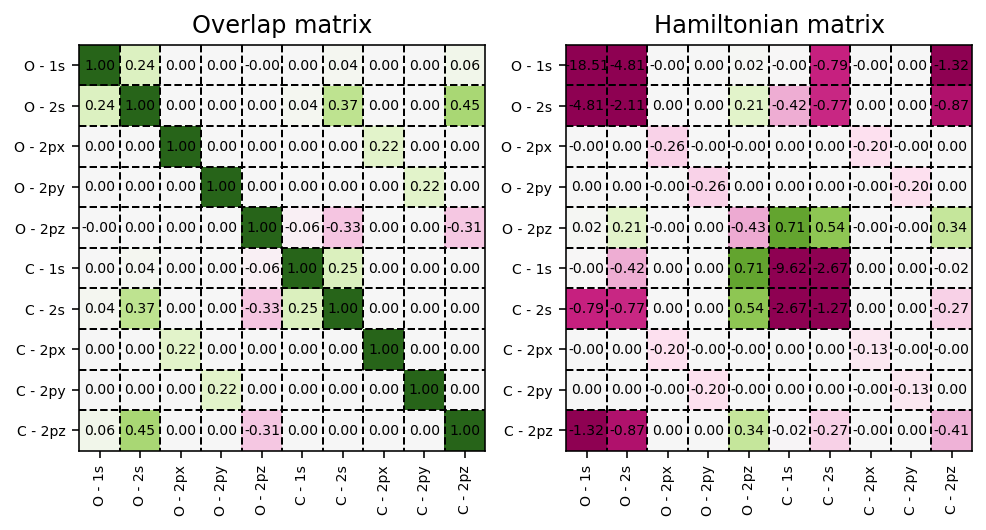
Energy decomposition
The molecular matrices can be used to perform a so-called energy decomposition, i.e., decompose the total electronic energy into the kinetic, nuclear attraction, electron-electron repulsion and exchange-correlation energy.
1import numpy as np
2from pydft import MoleculeBuilder, DFT
3
4co = MoleculeBuilder().from_name("CO")
5dft = DFT(co, basis='sto3g')
6en = dft.scf(1e-4, verbose=False)
7print("Total electronic energy: %12.6f Ht" % en)
8print()
9
10# retrieve molecular matrices
11res = dft.get_data()
12P = res['P']
13T = res['T']
14V = res['V']
15J = res['J']
16
17# calculate energy terms
18Et = np.einsum('ji,ij', P, T)
19Ev = np.einsum('ji,ij', P, V)
20Ej = 0.5 * np.einsum('ji,ij', P, J)
21Ex = res['Ex']
22Ec = res['Ec']
23Exc = res['Exc']
24Enuc = res['enucrep']
25
26print('Kinetic energy: %12.6f Ht' % Et)
27print('Nuclear attraction: %12.6f Ht' % Ev)
28print('Electron-electron repulsion: %12.6f Ht' % Ej)
29print('Exchange energy: %12.6f Ht' % (Ex))
30print('Correlation energy: %12.6f Ht' % (Ec))
31print('Exchange-correlation energy: %12.6f Ht' % (Exc))
32print('Nucleus-nucleus repulsion: %12.6f Ht' % (Enuc))
33print()
34print('Sum: %12.6f Ht' % (Et + Ev + Ej + Exc + Enuc))
The above script yields the following output:
Total electronic energy: -111.147096 Ht
Kinetic energy: 110.216045 Ht
Nuclear attraction: -304.930390 Ht
Electron-electron repulsion: 75.597401 Ht
Exchange energy: -12.055579 Ht
Correlation energy: -1.232665 Ht
Exchange-correlation energy: -13.288244 Ht
Nucleus-nucleus repulsion: 21.258092 Ht
Sum: -111.147096 Ht
Kohn-Sham orbitals and their visualization
Within the Kohn-Sham approximation, the set of molecular orbitals that minimizes the total electronic energy are found via the diagonalization of the Fock matrix.
Coefficient matrix
These Kohn-Sham orbitals are encoded in the coefficient matrix which is extracted via the script below.
1import numpy as np
2from pydft import MoleculeBuilder, DFT
3import matplotlib.pyplot as plt
4
5def main():
6 # perform DFT calculation on the CO molecule
7 co = MoleculeBuilder().from_name("CO")
8 dft = DFT(co, basis='sto3g')
9 en = dft.scf(1e-6, verbose=False)
10
11 # build list of basis functions
12 labels = []
13 for a in co.get_atoms():
14 for o in ['1s', '2s', '2px', '2py', '2pz']:
15 labels.append('%s - %s' % (a[0],o))
16
17 fig, ax = plt.subplots(1, 1, dpi=144, figsize=(4,4))
18 plot_matrix(ax, dft.get_data()['C'], xlabels=[str(i) for i in np.arange(1,11)],
19 ylabels=labels, title='Coefficient matrix')
20
21def plot_matrix(ax, mat, xlabels=None, ylabels=None, title = None, xlabelrot=90):
22 """
23 Produce plot of matrix
24 """
25 ax.imshow(mat, vmin=-1, vmax=1, cmap='PiYG')
26 for i in range(mat.shape[0]):
27 for j in range(mat.shape[1]):
28 ax.text(i, j, '%.2f' % mat[j,i], ha='center', va='center',
29 fontsize=7)
30 ax.set_xticks([])
31 ax.set_yticks([])
32 ax.hlines(np.arange(1, mat.shape[0])-0.5, -0.5, mat.shape[0] - 0.5,
33 color='black', linestyle='--', linewidth=1)
34 ax.vlines(np.arange(1, mat.shape[0])-0.5, -0.5, mat.shape[0] - 0.5,
35 color='black', linestyle='--', linewidth=1)
36
37 ax.set_xticks(np.arange(0, mat.shape[0]))
38 if xlabels is not None:
39 ax.set_xticklabels(xlabels, rotation=xlabelrot)
40 ax.set_yticks(np.arange(0, mat.shape[0]))
41
42 if ylabels is not None:
43 ax.set_yticklabels(ylabels, rotation=0)
44 ax.tick_params(axis='both', which='major', labelsize=7)
45
46 if title is not None:
47 ax.set_title(title)
48
49if __name__ == '__main__':
50 main()
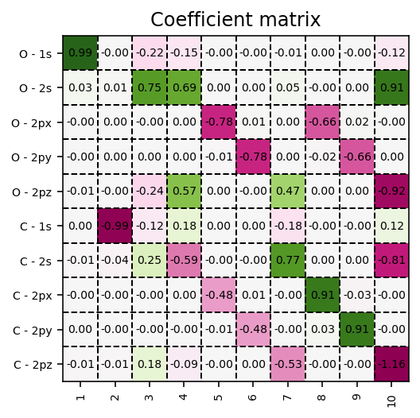
Contour plots
These orbitals can be readily visualized, as exemplified in the code below. Here,
we make use of the pydft.MolecularGrid.get_amplitude_at_points() method.
To use this method, we first have to retrieve the pydft.MolecularGrid
object from the pydft.DFT class via its pydft.get_molgrid_copy()
method.
1import numpy as np
2from pydft import MoleculeBuilder, DFT
3import matplotlib.pyplot as plt
4from mpl_toolkits.axes_grid1 import make_axes_locatable
5
6def main():
7 # perform DFT calculation on the CO molecule
8 co = MoleculeBuilder().from_name("CO")
9 dft = DFT(co, basis='sto3g')
10 en = dft.scf(1e-6, verbose=False)
11
12 # grab molecular orbital energies and coefficients
13 orbc = dft.get_data()['C']
14 orbe = dft.get_data()['orbe']
15
16 # generate grid of points and calculate the electron density for these points
17 sz = 4 # size of the domain
18 npts = 100 # number of sampling points per cartesian direction
19
20 # produce meshgrid for the xz-plane
21 x = np.linspace(-sz/2,sz/2,npts)
22 zz, xx = np.meshgrid(x, x, indexing='ij')
23 gridpoints = np.zeros((zz.shape[0], xx.shape[1], 3))
24 gridpoints[:,:,0] = xx
25 gridpoints[:,:,2] = zz
26 gridpoints[:,:,1] = np.zeros_like(xx) # set y-values to 0
27 gridpoints = gridpoints.reshape((-1,3))
28
29 # grab a copy of the MolecularGrid object
30 molgrid = dft.get_molgrid_copy()
31
32 fig, ax = plt.subplots(2, 5, dpi=144, figsize=(16,6))
33 for i in range(len(orbe)):
34 m_ax = ax[i//5, i%5]
35
36 # calculate field
37 field = molgrid.get_amplitude_at_points(gridpoints, orbc[:,i]).reshape((npts, npts))
38
39 # plot field
40 levels = np.linspace(-2,2,17, endpoint=True)
41 im = m_ax.contourf(x, x, field, levels=levels, cmap='PiYG')
42 m_ax.contour(x, x, field, colors='black')
43 m_ax.set_aspect('equal', 'box')
44 m_ax.set_xlabel('x-coordinate [a.u.]')
45 m_ax.set_ylabel('z-coordinate [a.u.]')
46 divider = make_axes_locatable(m_ax)
47 cax = divider.append_axes('right', size='5%', pad=0.05)
48 fig.colorbar(im, cax=cax, orientation='vertical')
49 m_ax.set_title('MO %i: %6.4f Ht' % (i+1, orbe[i]))
50
51 plt.tight_layout()
52
53if __name__ == '__main__':
54 main()
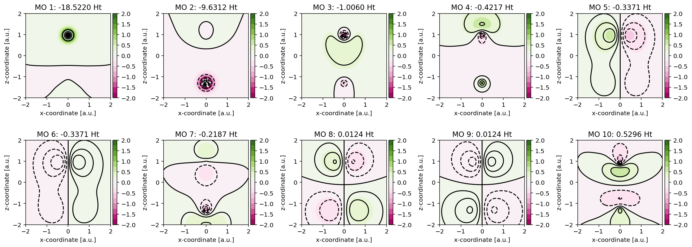
See also
To get a better impression of the three-dimensional shape of the molecular orbitals, it is recommended to produce isosurfaces rather than contour plots.
Isosurfaces
Generating an isosurface is very similar to generating a contour plot, but with the notable difference that the orbital has to be sampled in three-dimensional space. In the script below, an example is provided for one of the \(1\pi\) orbitals of CO. Observe that for generating an isosurface, the algorithm has to be executed twice, once for the positive lobe and once for the negative lobe. The isosurfaces are stored in so-called Polygon File Format files which can be used in your favorite rendering program.
Note
Isosurface generation requires the PyTessel package to be installed. More information can be found here.
1import numpy as np
2from pydft import MoleculeBuilder, DFT
3from pytessel import PyTessel
4
5def main():
6 # perform DFT calculation on the CO molecule
7 co = MoleculeBuilder().from_name("CO")
8 dft = DFT(co, basis='sto3g')
9 en = dft.scf(1e-4, verbose=False)
10
11 # grab a copy of the MolecularGrid object and of the coefficient matrix
12 molgrid = dft.get_molgrid_copy()
13 orbc = dft.get_data()['C']
14
15 sz = 10 # size of the domain
16 npts = 50 # number of sampling points per cartesian direction
17
18 build_isosurface('1pi_pos.ply', molgrid, orbc[:,4], 0.03, sz, npts)
19 build_isosurface('1pi_neg.ply', molgrid, orbc[:,4], -0.03, sz, npts)
20
21def build_isosurface(filename, molgrid, coeff, isovalue, sz, npts):
22 # produce meshgrid for the unit cell
23 x = np.linspace(-sz/2, sz/2, npts)
24 zz, yy, xx = np.meshgrid(x, x, x, indexing='ij')
25 N = len(x)
26 gridpoints = np.zeros((N, N, N, 3))
27 gridpoints[:,:,:,0] = xx
28 gridpoints[:,:,:,1] = yy
29 gridpoints[:,:,:,2] = zz
30 gridpoints = gridpoints.reshape((-1,3))
31
32 # build isosurface
33 scalarfield = molgrid.get_amplitude_at_points(gridpoints, coeff).reshape(npts, npts, npts)
34 unitcell = np.diag(np.ones(3) * sz)
35
36 pytessel = PyTessel()
37 vertices, normals, indices = pytessel.marching_cubes(scalarfield.flatten(), scalarfield.shape, unitcell.flatten(), isovalue)
38 pytessel.write_ply(filename, vertices, normals, indices)
39
40if __name__ == '__main__':
41 main()
Analyzing the Becke grid
All numerical integrations are performed by means of Gauss-Chebychev and Lebedev quadrature using the Becke grid.
Atomic fuzzy cells
It is possible to produce a contour plot of
the fuzzy cells (molecular weights) on a plane using the
pydft.MolecularGrid.calculate_weights_at_points() method. An example
is provided below.
1from pydft import MolecularGrid
2from pyqint import MoleculeBuilder
3import numpy as np
4import matplotlib.pyplot as plt
5
6# construct molecule
7mol = MoleculeBuilder().from_name('benzene')
8cgfs, atoms = mol.build_basis('sto3g')
9
10# construct molecular grid
11molgrid = MolecularGrid(atoms, cgfs)
12
13# produce grid of sampling points to calculate the atomic
14# weight coefficients for
15N = 150
16sz = 8
17x = np.linspace(-sz,sz,N)
18xv,yv = np.meshgrid(x,x)
19points = np.array([[x,y,0] for x,y in zip(xv.flatten(),yv.flatten())])
20
21# calculate the atomic weights
22mweights = molgrid.calculate_weights_at_points(points, k=3)
23
24# plot the atomic weights
25plt.figure(dpi=144)
26plt.imshow(np.max(mweights,axis=0).reshape((N,N)),
27 extent=(-sz,sz,-sz,sz), interpolation='bicubic')
28plt.xlabel('x [a.u.]')
29plt.ylabel('y [a.u.]')
30plt.colorbar()
31plt.grid(linestyle='--', color='black', alpha=0.5)
32
33# add the atoms to the plot
34r = np.zeros((len(atoms), 3))
35for i,at in enumerate(atoms):
36 r[i] = at[0]
37plt.scatter(r[0:6,0], r[0:6,1], s=50.0, color='grey', edgecolor='black')
38plt.scatter(r[6:12,0], r[6:12,1], s=50.0, color='white', edgecolor='black')
39
40plt.tight_layout()
In the script above, we color every point by the maximum value for each of the atomic weights. When this maximum value is one, this implies that the grid point belongs to a single atom. When multiple atoms ‘share’ a grid point, the maximum value among the atomic weights will be lower than one.
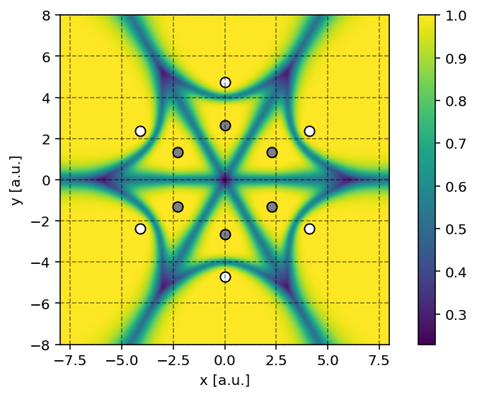
Note
Producing such a contour plot is only meaningful for planar molecules such as benzene. For more complex molecules such as methane, it is rather difficult to make sense of the fuzzy cells upon projection on a plane.
Grid points
To obtain the set of grid points on which the numerical integration (quadrature),
is performed, we can invoke the pydft.MolecularGrid.get_grid_coordinates()
method.
1from pydft import MolecularGrid
2from pyqint import MoleculeBuilder
3import matplotlib.pyplot as plt
4
5# construct molecule
6mol = MoleculeBuilder().from_name('co')
7cgfs, atoms = mol.build_basis('sto3g')
8
9# construct molecular grid
10molgrid = MolecularGrid(atoms, cgfs, nshells=16, nangpts=74)
11molgrid.initialize()
12
13# obtain the grid points
14gridpoints = molgrid.get_grid_coordinates()
15
16# plot the atomic weights
17colors = '#DD0000', '#222222'
18fig = plt.figure(dpi=300, figsize=(8,6))
19ax = fig.add_subplot(projection='3d')
20for i in range(0, len(gridpoints)):
21 ax.scatter(gridpoints[i][:,0], gridpoints[i][:,1], gridpoints[i][:,2],
22 s = 1.5, alpha=0.5, color=colors[i])
23
24# set axes
25ax.set_xlim(-5,5)
26ax.set_ylim(-5,5)
27ax.set_zlim(-5,5)
28ax.set_xlabel('x [a.u.]')
29ax.set_ylabel('y [a.u.]')
30ax.set_zlabel('z [a.u.]')
31ax.set_box_aspect(aspect=None, zoom=0.8)
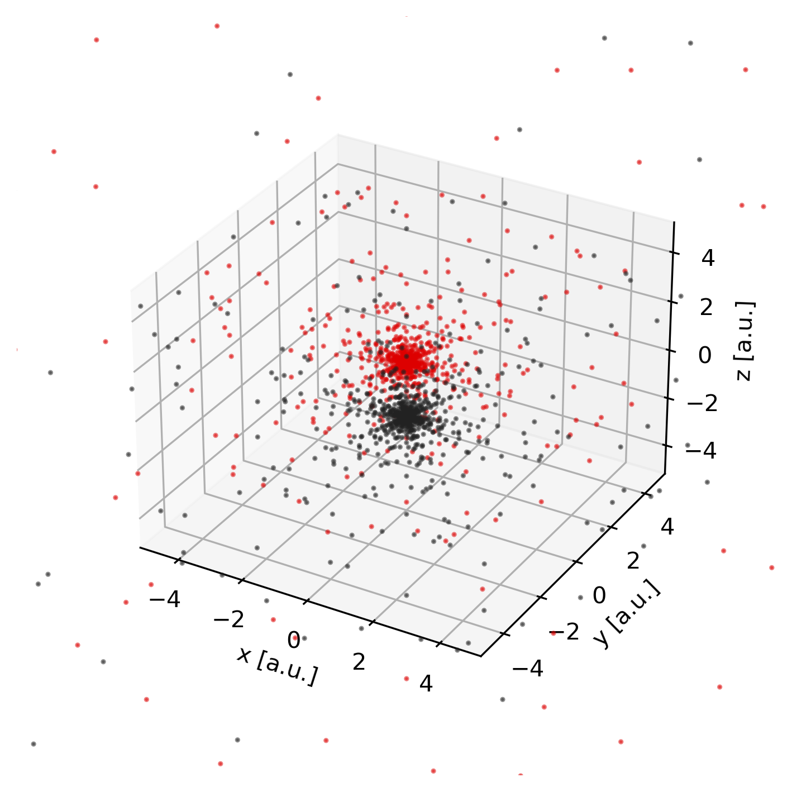
Hartree potential
The Hartree potential is calculated from the electron density distribution using the Poisson equation.
Projection onto spherical harmonics
The Poisson equation is solved on the atomic grid by first projecting the electron density onto the spherical harmonics such that the following equation holds.
where \(\rho(r_{k}, \Omega)\) is the electron density at radius \(r_{k}\), \(\rho_{klm}\) the linear expansion coefficient at position \(r_{k}\) for the spherical harmonic \(lm\) and \(Y_{lm}\) a spherical harmonic with quantum numbers \(l\) and \(m\).
We can readily visualize and interpret this projection using the
pydft.MolecularGrid.get_rho_lm_atoms() as shown by the script below.
1import numpy as np
2from pydft import MoleculeBuilder, DFT
3import matplotlib.pyplot as plt
4from mpl_toolkits.axes_grid1 import make_axes_locatable
5
6def main():
7 # perform DFT calculation on the CO molecule
8 co = MoleculeBuilder().from_name("CO")
9 dft = DFT(co, basis='sto3g')
10 en = dft.scf(1e-6, verbose=False)
11
12 # get the projection onto the spherical harmonics
13 lmprojection = dft.get_molgrid_copy().get_rho_lm_atoms()
14
15 fig, ax = plt.subplots(1, 2, dpi=144, figsize=(6,4))
16 plot_spherical_harmonic_projection(ax[1], fig, lmprojection[0], title='O')
17 plot_spherical_harmonic_projection(ax[0], fig, lmprojection[1], title='C')
18 plt.tight_layout()
19
20def plot_spherical_harmonic_projection(ax, fig, mat, minval=5e-2, title=None):
21 im = ax.imshow(np.flip(mat, axis=0), origin='lower', cmap='PiYG', vmin=-minval,vmax=minval)
22 ax.grid(linestyle='--', color='black', alpha=0.8)
23 ax.set_xticks([-0.5,0.5,3.5,8.5,15.5], labels=['s','p','d','f','g'])
24 ax.set_yticks(np.arange(0, mat.shape[0], 5)-0.5,
25 labels=np.arange(0, mat.shape[0], 5))
26 ax.set_ylabel('Radial points $r_{i}$')
27 ax.set_xlim(-.5,15)
28 ax.set_xlabel('Spherical harmonics (lm)')
29 divider = make_axes_locatable(ax)
30 cax = divider.append_axes('right', size='5%', pad=0.05)
31 fig.colorbar(im, cax=cax, orientation='vertical')
32
33 if title is not None:
34 ax.set_title(title)
35
36if __name__ == '__main__':
37 main()
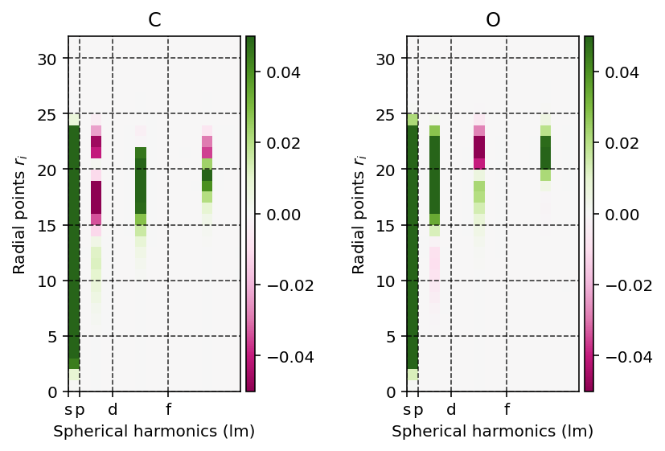
Exchange-correlation functional
The exchange and correlation potentials depend on the electron density and once the latter has been established, we can readily visualize these potentials.
Visualizing exchange potential
To construct the exchange potential at arbitrary grid points, we can use the
script as shown below which uses the pydft.MolecularGrid.get_exchange_potential_at_points()
method.
1from pydft import DFT
2from pyqint import MoleculeBuilder
3import numpy as np
4import matplotlib.pyplot as plt
5from mpl_toolkits.axes_grid1 import make_axes_locatable
6
7# perform DFT calculation on the CO molecule
8co = MoleculeBuilder().from_name("CO")
9dft = DFT(co, basis='sto3g')
10en = dft.scf(1e-6, verbose=False)
11
12# grab molecular orbital energies and coefficients
13orbc = dft.get_data()['C']
14orbe = dft.get_data()['orbe']
15
16# generate grid of points and calculate the electron density for these points
17sz = 4 # size of the domain
18npts = 100 # number of sampling points per cartesian direction
19
20# produce meshgrid for the xz-plane
21x = np.linspace(-sz/2,sz/2,npts)
22zz, xx = np.meshgrid(x, x, indexing='ij')
23gridpoints = np.zeros((zz.shape[0], xx.shape[1], 3))
24gridpoints[:,:,0] = xx
25gridpoints[:,:,2] = zz
26gridpoints[:,:,1] = np.zeros_like(xx) # set y-values to 0
27gridpoints = gridpoints.reshape((-1,3))
28
29# grab a copy of the MolecularGrid object
30molgrid = dft.get_molgrid_copy()
31
32# construct exchange potential
33field = molgrid.get_exchange_potential_at_points(gridpoints, dft.get_data()['P'])
34field = field.reshape((npts, npts))
35
36# plot field
37fig, ax = plt.subplots(1, 1, dpi=144, figsize=(4,4))
38levels = np.linspace(-6,6,25, endpoint=True)
39im = ax.contourf(x, x, field, levels=levels, cmap='PiYG')
40ax.contour(x, x, field, levels=levels, colors='black', linewidths=0.5)
41ax.set_aspect('equal', 'box')
42ax.set_xlabel('x-coordinate [a.u.]')
43ax.set_ylabel('z-coordinate [a.u.]')
44divider = make_axes_locatable(ax)
45cax = divider.append_axes('right', size='5%', pad=0.05)
46fig.colorbar(im, cax=cax, orientation='vertical')
47ax.set_title('Exchange potential')
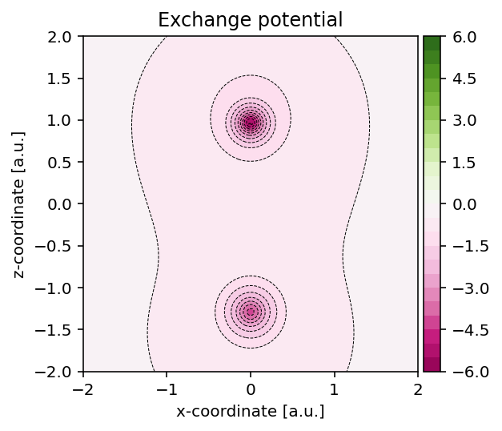
Visualizing correlation potential
In a similar fashion as for the exchange potential, we can use the method
pydft.MolecularGrid.get_correlation_potential_at_points() to obtain the
correlation potential field.
1from pydft import DFT
2from pyqint import MoleculeBuilder
3import numpy as np
4import matplotlib.pyplot as plt
5from mpl_toolkits.axes_grid1 import make_axes_locatable
6
7# perform DFT calculation on the CO molecule
8co = MoleculeBuilder().from_name("CO")
9dft = DFT(co, basis='sto3g')
10en = dft.scf(1e-6, verbose=False)
11
12# grab molecular orbital energies and coefficients
13orbc = dft.get_data()['C']
14orbe = dft.get_data()['orbe']
15
16# generate grid of points and calculate the electron density for these points
17sz = 4 # size of the domain
18npts = 100 # number of sampling points per cartesian direction
19
20# produce meshgrid for the xz-plane
21x = np.linspace(-sz/2,sz/2,npts)
22zz, xx = np.meshgrid(x, x, indexing='ij')
23gridpoints = np.zeros((zz.shape[0], xx.shape[1], 3))
24gridpoints[:,:,0] = xx
25gridpoints[:,:,2] = zz
26gridpoints[:,:,1] = np.zeros_like(xx) # set y-values to 0
27gridpoints = gridpoints.reshape((-1,3))
28
29# grab a copy of the MolecularGrid object
30molgrid = dft.get_molgrid_copy()
31
32# construct exchange potential
33field = molgrid.get_correlation_potential_at_points(gridpoints, dft.get_data()['P'])
34field = field.reshape((npts, npts))
35
36# plot field
37fig, ax = plt.subplots(1, 1, dpi=144, figsize=(4,4))
38levels = np.linspace(-0.2,0.2,101, endpoint=True)
39im = ax.contourf(x, x, field, levels=levels, cmap='PiYG')
40ax.contour(x, x, field, levels=levels, colors='black', linewidths=0.5)
41ax.set_aspect('equal', 'box')
42ax.set_xlabel('x-coordinate [a.u.]')
43ax.set_ylabel('z-coordinate [a.u.]')
44divider = make_axes_locatable(ax)
45cax = divider.append_axes('right', size='5%', pad=0.05)
46fig.colorbar(im, cax=cax, orientation='vertical')
47ax.set_title('Correlation potential')
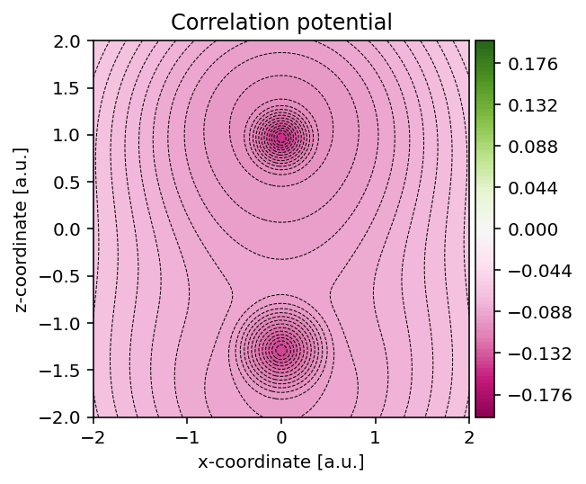